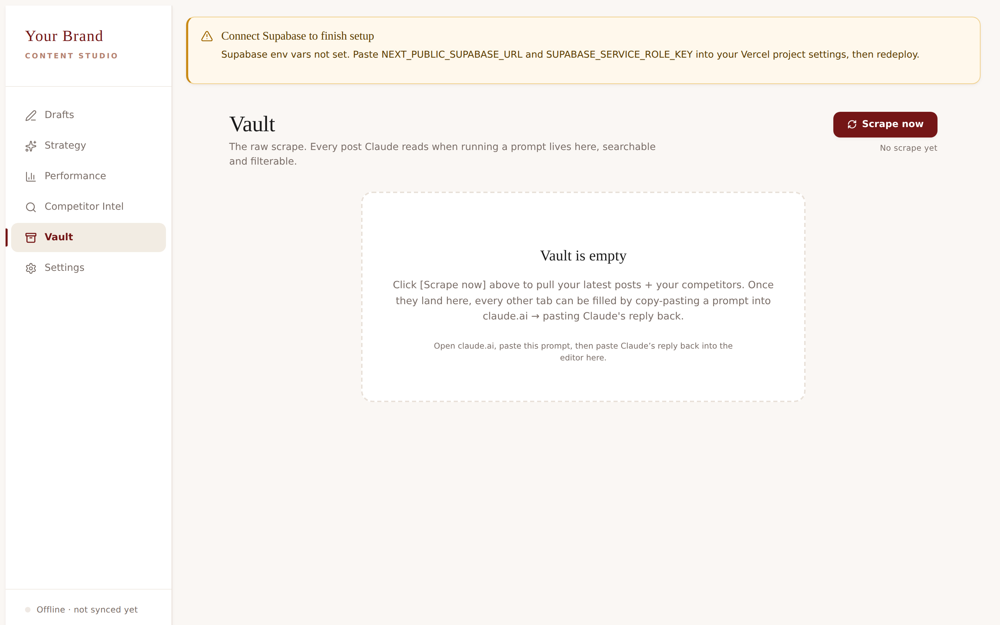
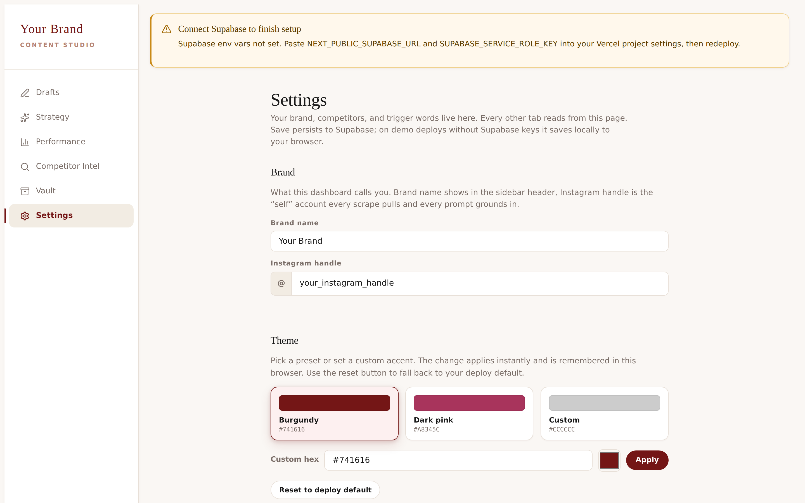
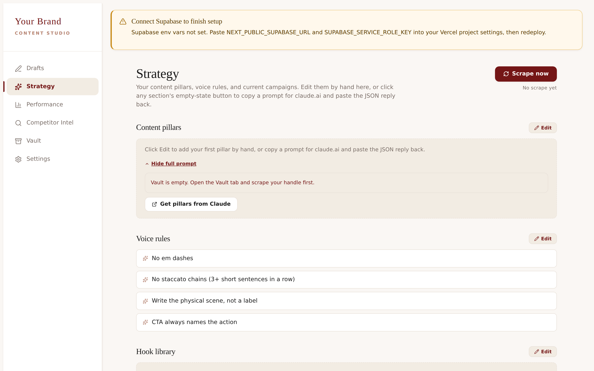
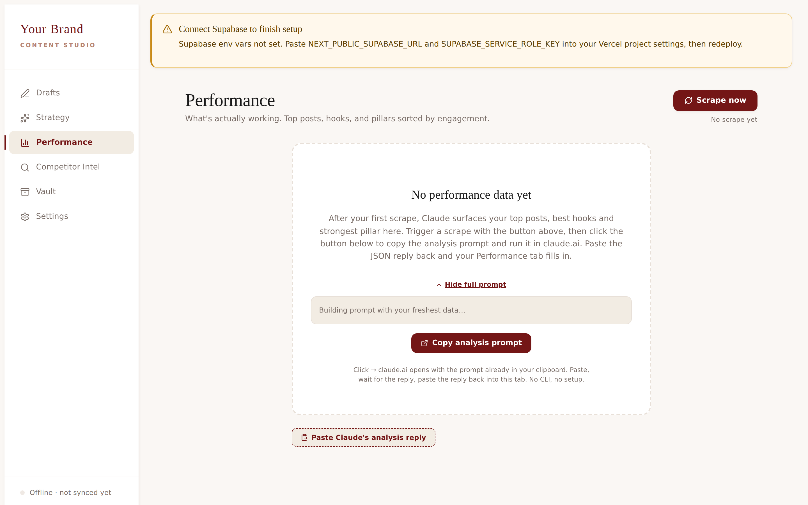
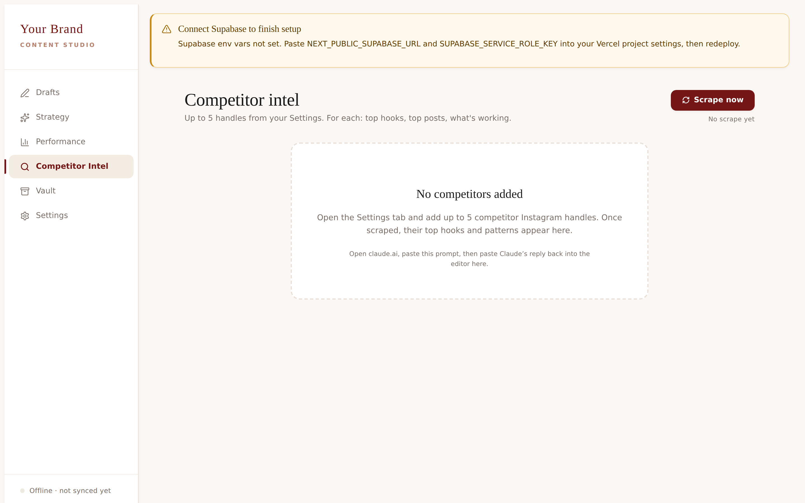
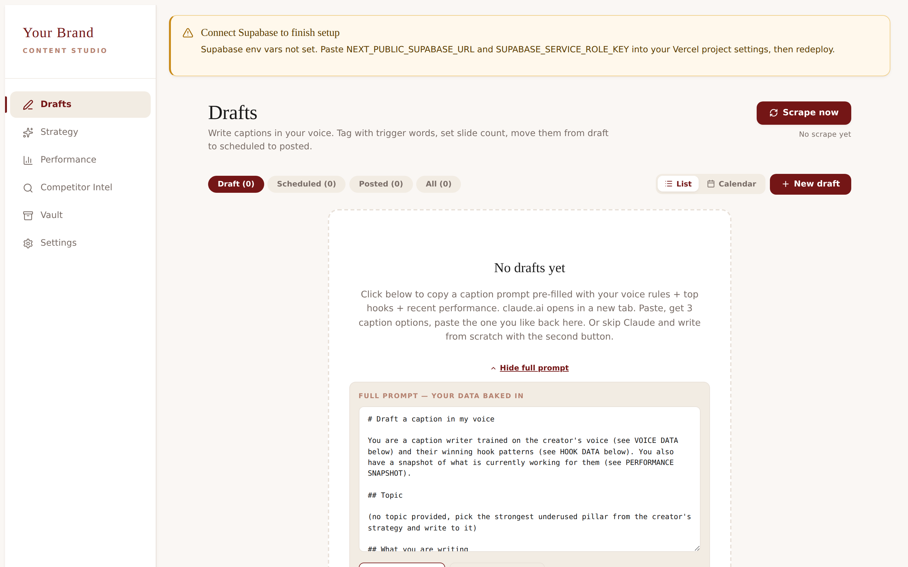

Two parts. Part one: setup, every click, in under 30 minutes. Part two: how to use each tab, written so a 4th grader could follow it. No code knowledge required. By the last page you have a live dashboard, your data inside it, and a weekly routine.
Content Studio is your personal dashboard for everything that goes into posting on Instagram with intention. Once it is live, it does four jobs that used to eat your week:
| What | Why | Cost |
|---|---|---|
| A GitHub account | Holds your copy of the dashboard code | Free |
| A Supabase account | Stores your scraped posts + drafts | Free |
| A Vercel account | Hosts your live dashboard at a real URL | Free |
| An Apify account | Does the actual Instagram scraping | Free tier ($5/mo credit) |
| A Claude account | Runs the five prompts on your data | $20/mo (you have it) |
Total new monthly cost if you already pay for Claude: $0.
The next pages walk you through six steps, in order. Follow them top to bottom and you will have a live dashboard at your own URL by the end.
The dashboard lives in a public GitHub repository. You are going to make a personal copy (called a "fork") so the version you deploy is yours, on your account, under your control.
github.com/YOUR-USERNAME/content-studio-dashboard.
Nothing is online yet. We will connect this to a host in Step 3.
If the Fork button takes you to a "Choose owner" page with one option, that one option is your account. Just click it and continue. GitHub asks because some people belong to multiple organizations.
Supabase is where your scraped posts, drafts, pillars and voice rules live. The free tier covers everything you will ever need for one Instagram brand.
content-studio. Choose any region close to you. Choose a strong database password (write it down somewhere safe). Click Create new project.Project URL (looks like https://abcd1234.supabase.co)service_role key (under "Project API keys", click "Reveal" first)service_role key gives full
access to your database. Treat it like a password. Never share it, never
paste it into a public chat. We will store it only in Vercel where it
stays private to your project.
If you see anon and service_role in the API
panel, copy the service_role one. The anon key is
public-safe but the dashboard needs server-side access to write back
your data.
Vercel hosts the dashboard at a real URL. Free hobby plan covers it. The one-click button below clones your fork from Step 1 and walks you through the env vars.
NEXT_PUBLIC_SUPABASE_URL = your Supabase project URLSUPABASE_SERVICE_ROLE_KEY = your service_role keyFUNCTION_SECRET = any long random string (open 1Password password generator, set length 32, copy the result, paste here)content-studio-yourname.vercel.app. Click it. Your dashboard is live.
Vault tab on first load. This is what a fresh dashboard looks like.
Your Supabase project is empty right now. The dashboard needs six tables (posts, drafts, strategy, intel, settings, scrape_log). One SQL paste creates all of them.
supabase/migrations/0001_initial_schema.sql. Click the Raw button, then Cmd-A and Cmd-C to copy the whole file.The [Scrape now] button on every tab pulls your last 90 days of Instagram posts, plus the last 90 days of up to five competitors, into the Vault. The first scrape takes about 90 seconds.

Settings tab. Brand name, handle, competitors, Apify token, trigger words.
The dashboard has a button on every tab labeled "Copy prompt with my data". One click does three things at once:
You paste into Claude, wait for the answer, copy Claude's reply, paste back into the editor on the tab you came from. Done.

Strategy tab. The [Copy prompt with my data] button lives at the top.
Your dashboard has six tabs. Each tab has one job. The next six pages walk through them, one page per tab, in the order you will use them in real life.
Every tab (except Settings) has the same two buttons in the top right:
The bottom of the sidebar shows the same status. A grey dot with "Offline" means no scrape yet. A glowing taupe dot with "Live" means your data is fresh.
What this tab does. Tells the dashboard your brand name, your Instagram handle, who your competitors are, and which words you watch for in DMs. Everything else builds on what you put here.
When you open it. The very first time you log in. After that, only when you want to add or swap a competitor, or change a trigger word.
thessa.revenu.Settings tab. The brain of the dashboard. Fill it in once, edit when you need to.
What this tab does. Shows every post the dashboard pulled from your account and your competitor accounts. Think of it as a folder full of all the posts, with likes, comments, and the full caption on each one. You read it like a feed.
When you open it. Right after a scrape, to see what came back. Or any time you want to read a real post to spark an idea.
Vault tab. Every post from you and your competitors, side by side.
What this tab does. Holds two things: your pillars (the 3 to 5 topics you actually post about) and your voice (the rules of how you write). Both are filled in by Claude after one prompt each.
When you open it. The first time, right after your first scrape. After that, once a month, or when you feel your topics or voice have shifted.
[ to the matching ].Strategy tab. Pillars on top, voice rules below. The base layer for every caption you write.
What this tab does. Shows you which of your own posts get the most love, which pillars perform best, and which hook types stop the scroll. One snapshot, no spreadsheets.
When you open it. Every week, after your fresh scrape. This is your "what to post more of" answer.
{ to the matching }).
Performance tab. Your top posts plus what is working broken down by pillar and hook.
What this tab does. Reads the posts from the up to five competitors you set in Settings, then tells you what is working for them: their best hook types, their best formats, the topics they keep returning to, and what you can ethically learn from each one.
When you open it. Once a week, on the same day you check Performance. Or whenever a competitor pulls off a post that goes off and you want to know why.

Competitor Intel tab. One block per handle. The "what should I steal" map.
What this tab does. Where you write new captions. Each draft has a topic, a status (draft, scheduled, posted), a trigger word, a slide count, and a place for the full caption. You can also ask Claude to write 3 caption options on any topic, in your voice.
When you open it. Every time you want to write a post. Daily, weekly, however often you post.

Drafts tab. All your posts in one place, from idea to scheduled to live.
The dashboard is only as useful as the rhythm you build around it. Here is the 20-minute weekly check-in we recommend. Do this on the same day every week (Monday morning works for most people).
Open Strategy. Re-run both the pillars prompt and the voice prompt. Your pillars and voice drift slowly. A monthly refresh keeps Claude on-brand.
Open Settings. Review your competitors. Swap out anyone who has gone quiet or off-brand. Add a fresh handle whose work is making you think.
For reference. You never have to type these out, the dashboard buttons do the copying for you. They are reproduced here so you can read what each prompt asks Claude to do, and tweak them in your own copy of the code if you want to.
All five prompts live in lib/promptBuilders.ts in your
GitHub fork. Each one is the "fat" version, framework baked in,
schema-strict so the answer pastes cleanly back into the dashboard.
You are a senior content strategist. From the DATA below (a creator's recent Instagram posts), extract 3 to 5 content pillars that genuinely describe what they post about.
## What a pillar is
A pillar is a recurring topic territory the creator visibly owns. Not a category, not a "vibe", a specific subject they keep returning to with their own angle.
Test for a real pillar:
1. Can you point to 4+ posts that clearly belong to it?
2. Could a stranger guess what kind of post comes next?
3. Does the name sound like something the creator would actually say (not a brand-deck buzzword)?
## How to find them
- Read every caption end-to-end. Note the actual subject, not just the hook.
- Group by subject, not by format. A reel and a carousel about the same thing belong together.
- Merge any two groups that overlap by more than ~60%.
- If you end up with 6+ pillars, you over-split. Collapse the weakest into the others.
- If you end up with 1-2, you under-grouped. Look harder for distinct angles.
## Output rules
- name: 1 to 3 words. Plain English. The creator's own framing if you can spot it.
- description: ONE sentence. Specific. What this pillar covers + what makes the creator's take on it different.
- color: hex. Pick warm, readable tones. Use distinct hues across pillars.
- share: 0..1, sums to roughly 1.0 across all pillars.
## Forbidden
- Generic marketing words: "lifestyle content", "value-driven posts", "educational content", "inspirational posts", "empowerment", "authentic", "raw".
- Buzzword pillars that fit any creator: "Mindset", "Motivation", "Tips", only allowed if the description proves the creator's specific spin.
- Em dashes. Use commas.
## Output
Return JSON only. No prose before or after. Match this schema exactly:
[
{ "name": "Passive income", "description": "...", "color": "#741616", "share": 0.32 }
]
You are a senior voice coach. From the DATA below (the creator's top-performing captions by engagement), extract the rules of their voice so any caption written using these rules sounds like them.
## What you are looking for
Voice = the patterns a reader would recognize as "this person" even with the handle removed. It shows up in:
- Sentence shape (long flowing vs short staccato; statements vs questions)
- Word choices they keep reusing (signature words, signature openers, signature closers)
- What they NEVER say (forbidden words, patterns, tones)
- The emotional register (warm vs cool, claiming vs hedging, certain vs exploratory)
- How they open (do they hook with a claim, a question, a confession, a callout?)
- How they close (CTA shape, sign-off, last line punch)
## Method
1. Read all captions. Underline every repeated pattern.
2. Distill to: 1 short tone phrase + 4 to 8 do/don't rules + signature phrases (3 to 8) + forbidden patterns (3 to 8).
3. Each rule must be CHECKABLE, "Opens with a claim, never a question" is good; "Authentic" is not.
4. Signature phrases must be VERBATIM things the creator actually wrote. Quote them.
5. Forbidden patterns are things you see them consistently avoid (em dashes, hedging language, hustle-bro talk, therapy speak, false suspense like "but here's the thing", etc.).
## Output rules
- tone: 3 to 6 adjectives separated by commas. Concrete. ("warm, declarative, direct", not "engaging, valuable, authentic").
- rules: prescriptive imperatives. Each one should be usable as a writing rule by another writer.
- signature_phrases: verbatim quotes (or near-verbatim openers/closers they reuse).
- forbidden: patterns they avoid. Be specific about WHY a writer would feel tempted to break it.
## Forbidden
- Vague rules ("Be authentic", "Be valuable", "Connect with audience").
- Em dashes anywhere in the output.
- Calling their voice "engaging" or "authentic". Show, do not label.
## Output
Return JSON only. No prose before or after.
{
"tone": "warm, declarative, direct",
"rules": ["Opens with a claim, never a question", "..."],
"signature_phrases": ["..."],
"forbidden": ["em dash", "..."]
}
You are a viral-hook analyst. From the DATA below (top posts of the creator + their competitors), pull the 10 highest-performing hooks and explain WHY each one works.
A hook = the first line of the caption OR the first 2 seconds of the reel, the thing that stops the scroll.
## Hook type taxonomy
Classify each hook as ONE of these types. Use these exact strings:
- "contrarian": challenges a widely-held belief ("Stop posting every day.")
- "callout": names the reader by situation ("If you sell digital products and you're not posting on Sunday, read this.")
- "promise": specific outcome named upfront ("Here is exactly how I sold out my offer in 4 days.")
- "curiosity-gap": withholds the key info, forces a read ("I changed one thing about my hook and my reach 3x'd.")
- "numbered-list": "5 things...", "3 hooks..."
- "story-open": "I was sitting at my desk at 11pm when..."
- "confession": admits something uncomfortable ("I almost gave up on this offer in May.")
- "stat-shock": opens with a number that disrupts ("$0 to $47k in 8 weeks. Here is how.")
- "question": opens with a real question, not a fake one ("What if your low engagement is actually a signal you are about to break through?")
If a hook genuinely uses 2 patterns, pick the dominant one.
## Selection rules
- Rank by engagement (likes + 4*comments + 0.05*views if available).
- Across the top 10, MIX sources: at least 4 from the creator, at least 3 from competitors.
- Skip any duplicate idea, if two hooks say the same thing differently, keep the better one.
## Output rules
- text: verbatim hook line. Do not paraphrase.
- type: one of the strings above.
- source: "mine" (the creator's own) or the competitor's handle (e.g. "@themeaganhall").
- note: ONE sentence explaining the mechanism. WHY does it stop the scroll for this audience?
## Forbidden
- Made-up hooks. Only what is in the DATA.
- Em dashes.
- Generic notes ("This is engaging because it draws the reader in"). Be specific about the lever pulled.
## Output
Return JSON only. No prose before or after.
[
{ "text": "Stop posting every day.", "type": "contrarian", "source": "mine", "note": "Inverts the universal 'post daily' rule, which forces the audience that bought into that rule to read the next line." }
]
You are a senior competitive analyst. From the DATA below (recent posts of the creator's competitors), surface the patterns each competitor actually wins with.
You are looking for what THIS creator can ethically learn from, not a copy/paste playbook.
## What to extract per handle
For each competitor handle, surface:
1. Best hook types, which of these get them outsized engagement? (Use the hook taxonomy: contrarian / callout / promise / curiosity-gap / numbered-list / story-open / confession / stat-shock / question.) Rank top 2 or 3.
2. Best formats, reel vs carousel vs image. Which format produces their top-decile posts? Note any specific format twist (e.g. "5-slide carousels with text-only slides on cream").
3. Recurring topics, the 3 to 5 subjects they keep returning to. Be specific. "Mindset" is not a topic; "the moment you stop pricing for your nervous system" is.
4. Trending hooks (verbatim), list 3 to 5 of their highest-engagement opening lines, copied exactly.
5. What is replicable, ONE sentence: what could a different creator borrow without becoming a copycat?
## Method
- Sort each handle's posts by engagement (likes + 4*comments + 0.05*views if views exist).
- Look at the top 30% of each handle's set.
- Identify what they share. A handle's "best" is whatever they do that consistently outperforms their own average, NOT the absolute biggest post.
- If a handle has fewer than 10 posts in the data, say "insufficient data" and move on.
## Output
Return one block per handle, separated by blank lines. Match this format exactly:
@handle
best hook types: contrarian, callout
best formats: 5-slide carousel, talking-head reel
recurring topics: pricing nervous system, sold-out launches, post-baby business identity
trending hooks (verbatim):
- "If your offer is not selling, your hook is lying about it."
- "Stop pricing for your nervous system."
- "..."
replicable: opening with a contrarian claim against the creator's own past beliefs.
## Forbidden
- Em dashes.
- Made-up data. If you cannot tell from the DATA, say so.
- Generic recommendations ("post more"). Every line must be specific to this handle.
- Encouraging direct copying. Always frame as "what is the underlying pattern".
You are a caption writer trained on the creator's voice (see VOICE DATA below) and their winning hook patterns (see HOOK DATA below). You also have a snapshot of what is currently working for them (see PERFORMANCE SNAPSHOT).
## Topic
(provided by the dashboard from the Drafts editor)
## What you are writing
3 distinct caption options for ONE Instagram post on this topic. Each option is a complete caption + a format suggestion. The creator picks one, edits lightly, posts.
## Structure per option
For each of the 3 options, write:
- Hook, the first line. Scroll-stopper. In their voice. Uses one of THEIR winning hook patterns from HOOK DATA. Each option uses a DIFFERENT hook pattern (so the 3 options feel genuinely different).
- Body, 3 to 6 short paragraphs. Reads at a 7th-grade level. Uses their signature openers/closers. Avoids every pattern in their VOICE DATA's "forbidden" list.
- CTA, one specific action. Names what to do AND what the reader gets in return ("Comment WORD and I'll send you X"). Never "link in bio". Never "DM me" without a specific keyword.
- Format, carousel (with slide count + slide-by-slide TITLE + 1-line BODY each), or reel (with 4 to 6 beats), or single image (with a one-line visual brief).
## Hard rules
- NO em dashes anywhere. Use commas.
- NO label words ("overwhelmed", "burnout", "spiraling", "anxious", "stuck"). Write the physical scene instead ("you keep checking your phone every 3 minutes while pretending to read").
- NO staccato chains (3+ short sentences in a row). Use commas to make sentences flow.
- NO therapy-speak, no false suspense ("but here's the thing"), no hustle-bro talk, no raise-your-prices messaging unless the creator's voice explicitly uses it.
- NO generic marketing closers ("hope this helps!", "thoughts?").
## Quality bar
Each caption must pass these tests:
1. The first line could be lifted out and posted as a standalone hook, would it stop you?
2. Could a stranger reading 3 captions back to back identify it as the same person?
3. Is there ONE specific takeaway, or a vague gesture at three things?
4. Does the CTA name an action the reader can do in 5 seconds?
If any test fails, rewrite that option before returning.
## Output
Return Markdown with three numbered options. No preface, no apology, no "here are your captions", just the three options.
Open your Vercel project → Settings → Environment Variables. Confirm
all three are set: NEXT_PUBLIC_SUPABASE_URL,
SUPABASE_SERVICE_ROLE_KEY, FUNCTION_SECRET.
Each must have a value, no spaces, no quotes. Then go to Deployments
and click "Redeploy" on the most recent one.
Open the browser dev tools (right-click → Inspect → Console). If you see a 401 error, your Apify token is wrong or expired, replace it in Settings. If you see a 500 error, you missed the migration in Step 4, go back and run the SQL.
The button has to open Claude in a new tab. Some browsers block popups by default. Look for a small "popup blocked" icon in your address bar and allow popups for your dashboard URL.
Make sure you copied only the JSON block (everything
between { and the matching }, or the
[ and the matching ]). The editor expects
pure JSON, not the markdown wrapper Claude sometimes adds.
Stuck on a step? Email us a screenshot of the screen you are on, plus a one-line description of what you tried. We answer within one business day.